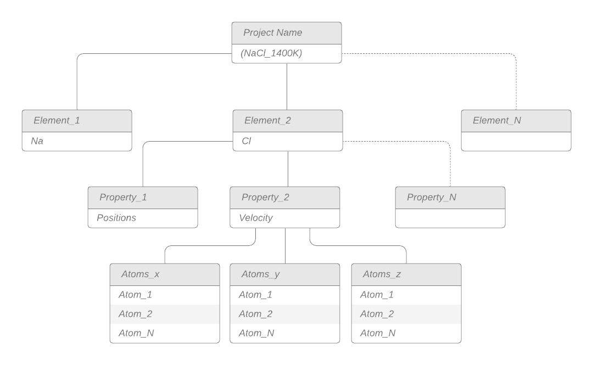

Database structure¶
One of the biggest selling points of the MDSuite program is our use the HDF database structure in the post-processing of simulations. Here we provide an overview of HDF5 structure, as well as how we use it in the package.
HDF5 Database¶
As per the groups website,
” The HDF Group is a non-profit organization with the mission of advancing state-of-the-art open source data management technologies, ensuring long-term access to the data, and supporting our dedicated and diverse user community.The HDF Group is the developer of HDF5®, a high-performance software library and data format that has been adopted across multiple industries and is the de factor standard in the scientific and research community.”
Despite its standardization accords the research community, it has note yet made much of an impact in the field of molecular dynamics simulations. The HDF here is an acronym for Hierarchical data structure, which describes exactly what it is, and how it works. Data inside a HDF5 database is broken into groups, subgroups, and then dataset. This allows for the simple splitting of data into relevant clusters for later use. Furthermore, the H5py library (pythons implementation of HDF5 databases), allows for trivial data compression, thereby reducing also storage requirements.
For more information regarding this technology, see the HDF5 or H5py websites directly.
HDF5 in MDSuite¶
To understand how we are using this database structure, we have constructed an image.
{kind=link}
In this image, the grey titles are outlining the general item that belongs in that area, whereas the white sections underneath offer an example. By structuring our databases like this, we are able to load numpy arrays of specific properties quickly, and efficient, and leave behind unnecessary data which would other impede calculations.